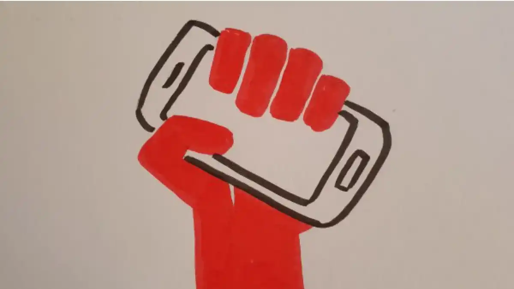
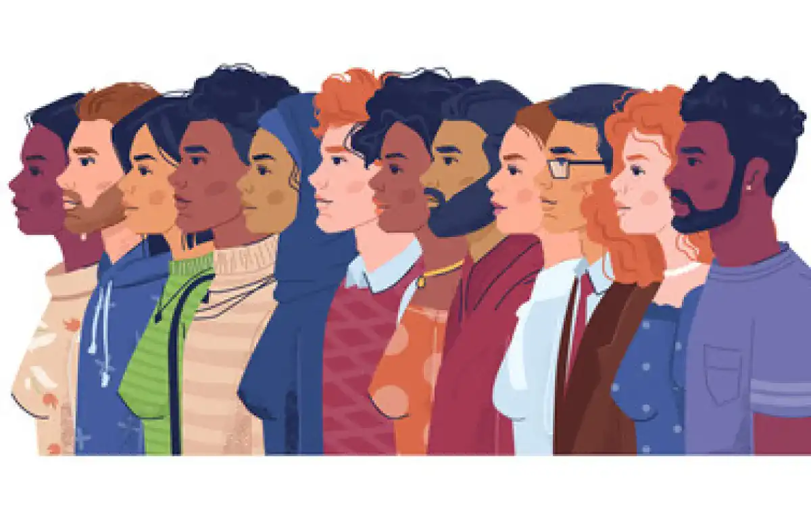

UNE GÉNÉRATION ENGAGÉE
Au cours des dernières années, notre monde a subi de nombreuses transformations, pour le meilleur et parfois pour le pire. Nous avons traversé des crises économiques, sociétales, sanitaires ou encore climatiques.
« Z » comme « Zoomer »
Je fais partie de la génération Z, les personnes nées entre 1997 et 2010. Une génération qui a cette réputation « d'hyperconnectée » souvent péjorative. Mais cela peut avoir de bons côtés. En effet, nous sommes confrontés chaque jour à des centaines d'informations, d'actualités, de hashtags, de pétition, d'appel à se mobiliser pour telle ou telle cause. Tout cela nous fait prendre consciences des problématiques du monde d'aujourd'hui et nous donne envie d'agir.
Le militantisme chez les jeunes
De nombreux jeunes se considèrent comme militants, que ce soit pour l'écologie, le féminisme, l'antiracisme, etc. Nous avons tous plus ou moins des idées qui nous tiennent à cœur. Et pour les exprimer, nous utilisons tous les moyens à disposition. Ces dernières années, surtout depuis la crise sanitaire, le militantisme a eu tendance à migrer vers les réseaux sociaux. Bien entendu, il est encore présent sur le terrain avec différentes actions, des marches, des collages, ce genre de choses.
Mais cette digitalisation des combats a rendu la démarche de l'engagement plus accessible, pour le mieux. Au final, le plus important est l'impact, le résultat de notre engagement, peu importe le moyen utilisé pour militer.
La politique, c'est pour les vieux ?
Certains peuvent penser que les jeunes sont désintéressés de la politique en général, mais je ne suis pas d'accord. Je pense que la plupart des jeunes ne conçoivent juste pas bien ce qu'elle signifie, car en réalité tout est politique. Autour de moi, dans la vie comme sur les réseaux sociaux, je vois énormément de jeunes prêts à tout pour un monde, un avenir qui leur ressemble. Et ils ne seraient pas politiquement engagés ? En réalité, si bien sûr, juste pas de façon traditionnelle. De plus, lorsque les jeunes s'expriment, ils ne sont tout simplement pas écoutés par les générations précédentes. Notre parole est bien trop souvent négligée.
Vision d'avenir
Personnellement, je souhaite un monde plus juste, inclusif pour toutes les minorités. Une sphère politique plus transparente, des décisions réellement collectives. La situation a déjà bien progressé et l'espoir doit perdurer malgré des évènements décourageants. Nous devons continuer d'agir collectivement et de prendre la parole pour tendre vers un monde équitable.
